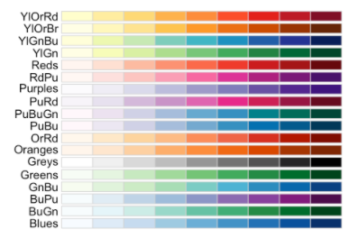

Purpose
Data visualisation is super fun and a great tool for communication. I have put together some slides for talk on data visualisation for economic historians at the Laboratory for the Economics of Africa’s Past. These resources are collected here to help when you think ‘where do I start with R?’.
I hope that you find these resources useful. They are divided up into different sections in the tabs below.
Why use R?
There are a multitude of different pieces of software and different workflows that you can use to create beautiful and intelligible data visualizations.
I think R is a very good choice. There are three reasons I love R for data viz.
ggplot2is a fantastic library for making data visualizations - it is customizable and logical.- The R community is very supportive and makes learning and improving a pleasure.
- The entire process of importing and cleaning data, visualizing it, and then sharing it is made easy in Rstudio.
Resources
In the tabs below, I have collected some resources that I hope will be beneficial on your journey.
Installing R
Getting started
Before we can do the fun stuff, we need to install R and RStudio.
The Modern Dive textbook has a great primer on getting started in R with an explanation of the difference between R and RStudio:

The Rstudio Education team also have a great beginner guide to R that covers installation.
Learning R
Videos and textbooks for learning how to use R
The R bible
The definitive guide to using R in a modern manner is R for Data Science by Hadley Wickham and Garrett Grolemund. I am not sure that is the best place to start, but it is certainly a helpful resource to come back to once you’re up and running.

RStudio Education
Rstudio Education have put together a set of instructions for learning R at different levels of competency. These include great guides for installing R, R Studio and the tidyverse packages right at the beginning.
The beginner, intermediate and expert start guides are linked here.
The RStudio team have put a lot of effort into creating resources that are useful for many R users, from helping teachers take their course work online, to financial analysis, to creating a personal website and academic publishing. Have a look around their website for more.
Other great video resources
I am a visual learner and as a consequence I like to watch how things are done and copy them. Because Youtube allows for pausing and recapping at your own pace, I think this is a great way to learn. I’ve collected some videos in these resources which I think are a good place to start.
David Robinson’s Youtube Channel
David Robinson does a weekly screencast where he shows how to do exploratory data analysis and makes plots in R.
Here is a video about analysing text from reviews of ramen noodles. It has some useful tips for drawing tie-fighter plots and interpreting linear regressions.
He also has a talk about tricks in the tidyverse.
Julia Silge’s blog is mostly about doing modelling in R, and text modelling in particular. It is a very useful place to look if you want to understand the tidymodels framework which provides access to a host of machine learning techniques in a very easy to use manner. She also has a Youtube channel.
Here is a video from Julia looking at sentiment analysis in R:
Written by Julia Silge and David Robinson, this book gives a lovely introduction to text mining in R. It has lots of examples and includes all the code necessary. As a bonus it is free!

Andrew Couch’s Youtube Channel has a marvelous set of walk throughs of innovative and exciting packages in R. He’s a young data scientist who is creating fantastic content focussed on R and the tidyverse.
Here is one of his videos on creating functions with the tidyverse.
Another resource collection!
The LearnR4Free website compiled by Mine Dogucu has a great set of resources that are free to use for the learner.
Datasets
Useful sources of data to practice your skills on
Having great datasets available helps to keep me interested in learning new skills. Here are three sources of interesting data:
Tidy Tuesday is a project run by the R for Data Science foundation - each week they share a real world data set and encourage R users to practice their skills. It has a really fantastic community aspect and if you share your work on Twitter people are always helpful and kind. Others share their work and their code so you can see how their plots were made. In their words,The intent of Tidy Tuesday is to provide a safe and supportive forum for individuals to practice their wrangling and data visualization skills independent of drawing conclusions.

“Data is Plural is a weekly newsletter of useful/curious datasets, published by Jeremy Singer-Vine”. This sums it up - really interesting stuff from all over the internet.

“Naked Data is a weekly newsletter which rounds up the best in data-driven storytelling created in or about the Global South.” Get the best bits of twitter without having to spend all day scrolling. Really great newsletter based in SA.

Visualization
Great places to get inspiration, figures and code from
Fundementals of data visualization
There are many books on the theory and practice of data visualization. I think Fundamentals of Data Visualization by Claus Wilke is an excellent choice to start with. The preface reads:
If you are a scientist, an analyst, a consultant, or anybody else who has to prepare technical documents or reports, one of the most important skills you need to have is the ability to make compelling data visualizations, generally in the form of figures. Figures will typically carry the weight of your arguments. They need to be clear, attractive, and convincing.
The book provides great advice for matching your data to a good chart type. For how to make the chosen chart in R, have a look at his course, linked below.

The best course in data viz
Clause Wilke’s Course on Data Visualization in R is a fantastic accompaniment to the book linked above. The description reads:
In this class, students will learn how to visualize data sets and how to reason about and communicate with data visualizations. A substantial component of this class will be dedicated to learning how to program in R. In addition, students will learn how to compile analyses and visualizations into reports, how to make the reports reproducible, and how to post reports on a website or blog.
It has wonderful sets of slides including this delightful primer on visualizing uncertainty, and accompnaying code that can be downloaded and worked through. Bonus: all of the slides are hosted on github such that you can see how they’re put together.
The ggplot2 bible
The definitive guide to ggplot2, The ggplot2 Book is a fantastic resource for novices and experts alike. It is easy to navigate and has helpful examples with code used to create each figure. (I love to consult the section on annotations as I never remember exactly how they work for some reason.)

Other great viz resources
The Storytelling with Data blog has an excellent selection of articles that give tips and tricks on how to design graphics that are easy to understand.
Their Chart Guide is also a fantastic starting point for how to pick a chart.

Jonathan Tan’s exploration of Household Solar Energy in the US is an amazing data storytelling piece that shows all of the code required to create each figure. It makes great use of annotations to explain each component of the visualizations.

The R Graph Gallery is a useful website which showcases different kinds of visualizations and provides the code that you need to use to recreate the figure yourself.
Custom themes
For style that is consistent and graphics that are clear
If you want to create a style of graphics that communicate clearly to the general public (or are consistent across your organization), have a look at the BBC Visual and Data Journalism cookbook for R graphics. The guide is filled with fantastic examples of visualizations you might like to emulate, and code to do so. They also walk through customizing fonts, colours and annotations for consistency over time.

If you want to create your own theme, Thomas Mock has a lovely guide on graphs that communicate well and look good.
He walks through a great example of where adding custom images on the plot makes sense:

Aesthetics
If you’re interested in learning more about how to make your charts look great.
William Chase’s talk on ‘The Glamour of Graphics’ is a fantastic resource on choosing colours and how to make your graphs pop.
Stephen Tracy’s breakdown of DataViz Sins You Should Never Commit is a walk-through on how not to confuse your audience. It explains the use of colour and secondary axes in Microsoft Excel plots.
If you are interested in learning more about fonts, Practical Typography is a great place to start. If you’re interested in choosing a font for a website, have a look at Google’s free fonts here.

This page from the R Graph Gallery gives a breakdown of the RcolorBrewer package and when to use its different sets of palettes.

The color brewer webpage gives fantastic advice on how to choose colours for maps, using the same theory as the package above. It also gives you the hex codes for each colour that you may copy to use yourself.
This video on colour theory is a useful primer on colour in data viz.
Econometrics in R
If you’re looking to implement econometric techqniques in R
Grant McDermott’s Data science for economists course is a great place to start. He has one lecture on regression that is super useful.

R Shiny
If you’re looking to make interactive web pages with R and R Markdown
The simplest way to get a quick and dirty interactive dashboard together is to use the flexdashboard package. Here is a link to the package. One of the great advantages of flexdashboard is that you can get amazing interactivity with just htmlwidgets, you do not need to use a shiny-runtime. In other words, you can create and host a static html page anywhere, for example on GitHub Pages.

If you want more interactivity, David Robinson’s video on global crop yields shows a simple Shiny app, with code here.
Another video example of R Shiny comes from Andrew Couch’s YouTube channel.
Mastering Shiny is a more advanced authoritative book on Shiny, written by Hadley Wickham. It’s a great place to get an understanding of the core of the package.

Recreating Published Figures
When you can’t get the authors of an article to share their data
Sometimes you may want to recreate a figure for your own paper from a journal article, but the data is not publicly accessible.
One option is to snip the image from the article and cite it in your own. The disadvantage of this is that the figure will not fit your colour scheme and may be horribly pixalated.
An alternative is to recreate the figure yourself by extracting the data from the image.
A truly fantastic free tool for this purpose is WebPlotDigitizer. This web application allows you to upload a figure and grab the data from it.
Have a look at a short video I made on how to use it here: